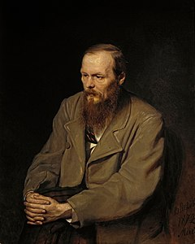

Fiodor Dostoievski

(Fiódor Mijailovich Dostoievsky o Dostoievski; Moscú, 1821 - San Petersburgo, 1881) Novelista ruso. Junto con Iván Turgueniev y León Tolstói, es el más apreciado representante de la literatura realista en su país y uno de los grandes genios de la narrativa europea decimonónica. Educado por su padre, un médico de carácter despótico y brutal, encontró protección y cariño en su madre, que murió prematuramente. Al quedar viudo, el padre se entregó al alcohol, y envió finalmente a su hijo a la Escuela de Ingenieros de San Petersburgo, lo que no impidió que el joven Dostoievski se apasionara por la literatura y empezara a desarrollar sus cualidades de escritor.
Algunas de sus obras son:
- Memorias del subsuelo
- Los hermanos Karamazov
- Crimen y castigo
Ernest Hemingway
El de Ernest Hemingway (Oak Park, Illinois, EEUU, 1899 - Ketchum, Idaho, EEUU, 1961) se puede decir que es un caso único en la historia de la literatura. El del escritor que muerto hace ya casi sesenta años se ha convertido en una industria cultural y también turística, o viceversa. Todos los años se realiza algún audiovisual bien sobre alguna de sus obras o bien sobre su propia vida. Series de televisión, películas de ficción, biopics, documentales, etc, lo convierten en un autor mediático y popular, quizás el mayor de todos los tiempos. De hecho, estamos ante un icono cultural. Ante un Premio Nobel y un Premio Pulitzer. Ante el escritor que protagonizó el punto de inflexión de la literatura anglosajona.
Algunas de sus obras son:
- El viejo y el mar
- Por quien doblan las campanas
- Paris era una fiesta
Miguel de Cervantes Saavedra

MMiguel de Cervantes y Saavedra nació en Alcalá de Henares el 29 de septiembre de 1547 y fue bautizado el 9 de octubre en la iglesia parroquial de Santa María la Mayor. Era el cuarto hijo del matrimonio del hidalgo Rodrigo de Cervantes con Leonor de Cortinas. El padre era cirujano-barbero, profesión de escasos ingresos y baja consideración social, la familia se trasladó a Valladolid pero las deudas contraídas llevaron al padre a la cárcel y provocaron el embargo de todos sus bienes. En 1566 se establecieron en Madrid, donde el joven Cervantes inició su carrera literaria gracias a Alonso Getino de Guzmán, organizador de espectáculos de la capital con quien su padre tenía negocios. En 1568 estudió con Juan López de Hoyos. En estos años, el joven Cervantes debió estar en contacto y mantener amistad con poetas como Pedro Laynez o Gálvez de Montalvo.
Algunas de sus obras son:
- El ingenioso hidalgo don Quijote de la Mancha
- La Galatea
- Novelas ejemplares